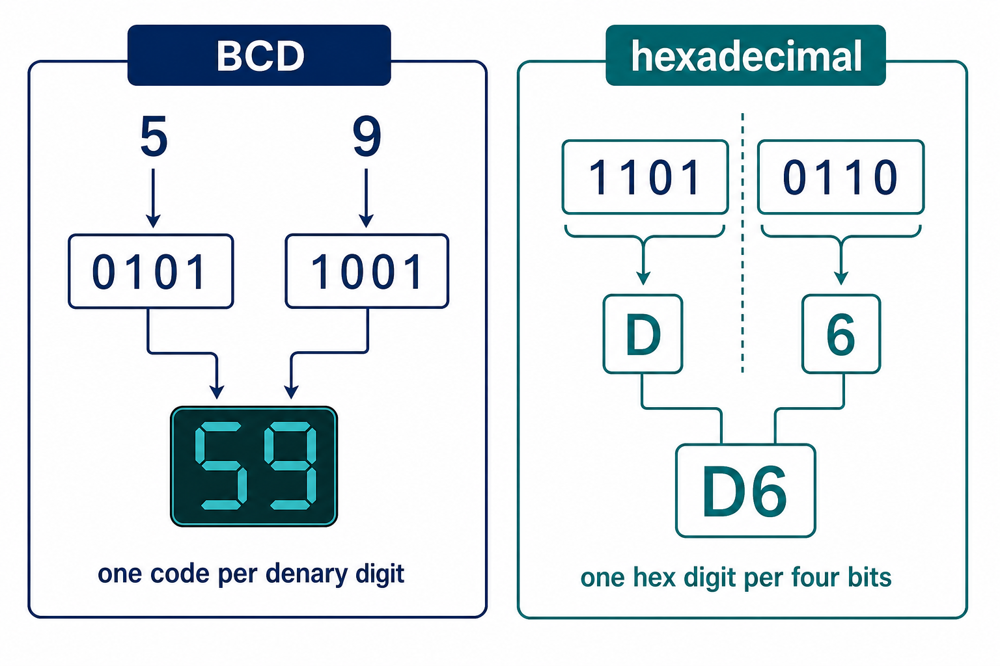

BCD and hexadecimal suit different real uses
Visual overview
BCD and hexadecimal represent bits for different purposes

Visual transcript
- BCD encodes each denary digit separately using four bits.
- Hexadecimal replaces each four-bit nibble with one hexadecimal digit.
- The two representations must not be decoded using the same rule.
Core explanation
Only 0000 to 1001 are valid BCD digit groups. BCD is used where decimal digits must be displayed or processed exactly, such as digital clocks, calculators and financial displays, although it usually uses more bits than pure binary.
Representation overview: the required integer representations are binary, denary, hexadecimal, BCD, one's-complement and two's-complement. Conversion means preserving the integer value while changing its base or signed representation.
Hexadecimal is used as a compact human-readable form of binary. One hex digit represents four bits, so hexadecimal is practical for memory addresses, machine-code/debug displays and colour values.
A digital clock is a practical BCD application because each displayed denary digit maps directly to one four-bit BCD group.